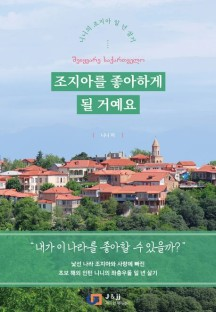

경제 소식 더보기1페이지전체/4

이번 주 화제의 신간
- 문과 남자의 과학 공부유시민 돌베개
- 거장의 경매 수첩심완보(태양바람) 21세기북스
- 조지아를 좋아하게 될 거예요니니 제이앤제이제이(디지털북스)
- 뱃살을 빼야 살 수 있습니다구리하라 다케시 서사원
- 중대재해처벌법이상국 대명출판사
- 프렌즈 튀르키예(터키)(2023~2024)주종원, 채미정 중앙북스
- 프렌즈 런던(2023~2024)한세라, 이정복, 이주은 중앙북스
- 꽁꽁꽁 캠핑윤정주 책읽는곰
- 김재우의 영어회화 100김재우 상상스퀘어
- 장기려 평전지강유철 꽃자리
- 설민석의 세계사 대모험 17설민석, 김정욱 단꿈아이
- 너의 하루가 시원하길 바라(‘너의 하루가 따숩길 바라’ 썸머 에디션)고은지 북라이프